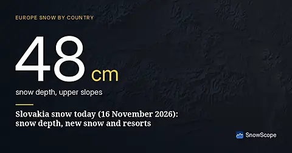

76 cm at Jotunheimen: where Norway's fresh snow fell
76 cm in 72 hours at Jotunheimen; 74 cm at Hardangervidda. These two ranges received the most snow from the latest system, marking a sharp shift in conditions since a week ago.
See the live snow forecast for Riksgränsen in the SnowScope appSnow depth, powder alerts and the 3D map, free.
Where the snow fell
Jotunheimen and Hardangervidda stand out as the two ranges that caught the heaviest snowfall. Jotunheimen, in the central highlands, received 76 cm in 72 hours. Hardangervidda, the high plateau to the south, saw 74 cm. These are the zones where your skis will find the freshest accumulation from this event.
Both areas face Atlantic moisture directly and sit at high elevation, so they always pull the most snow from each passing system. That pattern held again. The geography of Norway means you can track where snow falls by looking upslope and westward; these two ranges are the natural target when a system pushes in from the ocean.
| Resort | Snow depth | New snow, 72 h | Coming, next days | Top |
|---|---|---|---|---|
| Riksgränsen | 173 cm | 4 cm | 5 cm | 900 m |
| Sulitjelma Fjellandsby | 130 cm | 10 cm | 3 cm | 542 m |
| Tromsø Alpinpark | 92 cm | 8 cm | 4 cm | – |
| Galdhøpiggen Sommerskisenter | 61 cm | 19 cm | 1 cm | 2,180 m |
| Steilia | 58 cm | 3 cm | 2 cm | – |

Snow coverage now
In the past 72 hours, 133,130 km² of terrain received at least 5 cm of new snow. Total coverage across the country now stands at 246,310 km², up 5,370 km² from yesterday. The larger shift: a week ago, only 125,910 km² of Norway was snow-covered. Today it is nearly double. The country is 87 percent white.
This rapid buildup—from mostly bare to substantially covered in seven days—marks the transition from autumn to winter. Early November is when Atlantic storm systems start hitting consistently, and each one spreads snow downslope. You are watching that transition happen.

Snow depth by elevation
Riksgränsen in far northern Lapland holds the deepest measured snow pack at 173 cm. The pattern of depth follows elevation predictably. Above 2,000 m, the mean is 39 cm. Between 1,500 and 2,000 m, it is 29 cm. Between 1,000 and 1,500 m, depths average 25 cm with full coverage. Snow line sits at 0 m—meaning snow reaches to sea level in many areas.
Below 500 m, the picture is thinner: 7 cm mean and only 77 percent coverage. For ski touring or backcountry terrain, the reliable zone is above 1,500 m. Lower elevations are still transitional. If you are planning a route, the difference between 1,200 m and 1,800 m matters right now for both depth and consistency.
What is coming
The next three days (through 19 November) will bring another 11 cm at peak. November 20th is the snowiest day ahead, with 16 cm expected. Over the broader next seven days, the forecast points to 39 cm total in the highest areas.
Late November (24–30 November) could see another 35 cm, suggesting the active pattern will persist. Forecasts at this season shift often, so check updates before you travel if timing matters for your trip.
The pace of change
One week ago, 125,910 km² of Norway had snow. Today, 246,310 km² does. That is a near doubling of coverage. Yesterday to today, 5,370 km² gained a snow cover. This measured pace is typical for mid-November—Atlantic systems hit the high ranges and snow spreads downslope—but it still marks the decisive moment when winter conditions settle rather than fleeting early-season flakes.
The change is real and fast. If you have been waiting for consistent snow to arrive, it is arriving now.
Snow by height
From sea level to 500 m: 7 cm mean, 77 percent cover. From 500 to 1,000 m: 18 cm mean, 96 percent cover.
Above 1,000 m, snow is nearly complete. 1,000–1,500 m shows 25 cm and full coverage. 1,500–2,000 m shows 29 cm and full coverage. Above 2,000 m, the mean is 39 cm with complete cover. Each 500 m of elevation gain brings more snow and more continuity. For route planning, the threshold to continuous coverage is around 1,500 m.
Tips for skiers
- Jotunheimen and Hardangervidda received 76 and 74 cm respectively in 72 hours; these are the zones to target if you want fresh powder from this event.
- Snow above 1,500 m is now reliable and continuous at 29 cm or deeper; below 500 m remains thin and patchy. Plan your elevation accordingly.
- November 20th is the snowiest day in the near forecast at 16 cm; use that timing if you are aiming for the next significant dump.
- Before going off-piste in the high ranges that just received heavy snow, check the official avalanche forecast for new instability.
- Riksgränsen has established depth at 173 cm; Galdhøpiggen Sommerskisenter offers the highest terrain but is still well below its seasonal normal and best used for high-altitude touring.
About these numbers
Resort snow depths are the deepest snow on the resort's upper slopes on the date shown; they are estimates for an area, not a measurement at one point. Forecasts can change. Always read the official avalanche bulletin before going off-piste.
Cite this report
For research, teaching or the press: the numbers and charts are free to reuse under CC BY 4.0 with this citation.
SnowScope (2026), 76 cm at Jotunheimen: where Norway's fresh snow fell, https://snowscope.app/blog/en/2026/11/norway-snow-report-16-november-2026.html, accessed 2026-11-16
SnowScope (Atlas Labs). (2026, November 16). 76 cm at Jotunheimen: where Norway's fresh snow fell. SnowScope snow reports. https://snowscope.app/blog/en/2026/11/norway-snow-report-16-november-2026.html
BibTeX
@misc{snowscope2026norwaysnowreport16novemb,
author = {{SnowScope (Atlas Labs)}},
title = {76 cm at Jotunheimen: where Norway's fresh snow fell},
year = {2026},
month = nov,
howpublished = {\url{https://snowscope.app/blog/en/2026/11/norway-snow-report-16-november-2026.html}},
note = {Published 2026-11-16 20:42 UTC; accessed 2026-11-16}
}· CC BY 4.0 · Methods, data and tools →
Riksgränsen: snow and temperature by height, this winter vs last (tools) →
Follow Riksgränsen
Free: a message when fresh snow is coming, and the forecast every morning.
More snow reports

Slovakia's snow-covered area rose sharply to 2,020 km² in one week. Ski centrum Dedinky leads with 48 cm. Data from 16 November.

Sweden's snow cover grew by 167,100 km² in one week. Abisko holds 129 cm as early-season water accumulates in high fells. Data from 16 November.

Snow coverage in Romania dropped from 12,900 km² to 6,630 km² in a week, but peaks above 1,500 m keep their white cover as of 16 November.